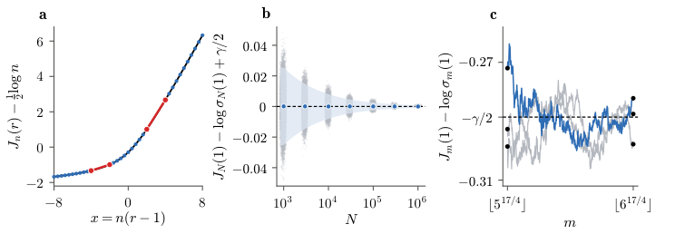
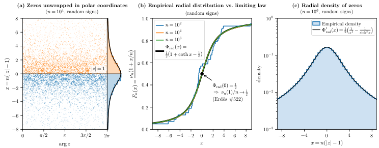

All main results, including the solution to Erdős Problem #522, are formally verified in Lean 4 with Mathlib; the proof was accepted by the Formal Conjectures project.
Abstract
We resolve Erdős Problem #522, posed in 1961, by proving that for random Littlewood polynomials the proportion of zeros in the closed unit disk converges almost surely to $1/2$. More generally, for partial sums of random power series with i.i.d. coefficients that are bounded, nondegenerate, and centrally symmetric, real Gaussian, or circular complex Gaussian, we prove that the proportion of zeros in the disk of radius $1+x/n$ converges almost surely to $\frac12(1+\coth x-1/x)$, uniformly in $x\in\mathbb{R}$. Thus almost all zeros lie at distance $O(1/n)$ from the unit circle. For random Littlewood polynomials, even with arbitrary dependence between degrees, the convergence at the unit circle holds at the almost-sure rate $O(n^{-1/4}\sqrt{\log n})$. We establish a law-of-the-iterated-logarithm criterion for dependent sequences and, for real Gaussian coefficients, obtain the sharp law of the iterated logarithm over all integer degrees, variance and cross-degree covariance asymptotics, quantitative central limit theorems, joint Gaussian limits, and increment bounds. For symmetric coefficient laws with bounded density and all moments finite, the number of zeros in the closed unit disk has variance $(c_G+κ_4/12)n+O_ξ(n^{399/400})$, and for random signs the constant is $c_G-1/6$. Thus the radial law is universal, while the fluctuations depend on the coefficient law through its fourth cumulant $κ_4$. All our main results are formally verified in Lean 4, and our proof of Erdős Problem #522 has been accepted as a solution to its formal statement in Google DeepMind's Formal Conjectures project.
Problem
Erdős Problem #522 (1961) asks whether the proportion of zeros of random Littlewood polynomials in the closed unit disk converges almost surely to 1/2. A related question is how zeros near the unit circle and their fluctuations depend on the coefficient law.
Approach
Jensen's formula and logarithmic concentration of the angular mean of log|f_n| give radial zero counts. These are extended to all degrees by controlling appended tails between sparse degrees. Fluctuations are analyzed through the argument principle as signed crossing counts, combined with a law-of-the-iterated-logarithm criterion for dependent sequences, Gaussian field methods and Lindeberg replacement. All main theorems are formalized in Lean 4 with Mathlib and checked with leanchecker using only the standard axioms.

Figure 4. (a) Jensen secants for one sequence of random signs at degree n=10^{5} , with x=n(r-1) : the dots are J_{n}(r)-\frac{1}{2}\log n , the curve is F_{\rm rad}(x)-\gamma/2 , and the chords run over [r_{1},r_{2}] and [r_{3},r_{4}] , where r_{1},\dots,r_{4}=1-4/n,\,1-2/n,\,1+2/n,\,1+4/n . By ( 2.1 ) the slope of each chord, measured in n\log r , lies between the counts \nu_{n}(r)/n at its two
Results
For bounded symmetric, real Gaussian and complex Gaussian coefficients, the proportion of zeros in the disk of radius 1+x/n converges almost surely to ½(1+coth x−1/x), uniformly in x, which resolves Erdős #522. For Gaussian coefficients the paper proves a sharp law of the iterated logarithm, CLTs and covariance asymptotics. The variance of the zero count is (c_G+κ_4/12)n plus lower-order terms, so the radial law is universal while fluctuations depend on the fourth cumulant κ_4.

Figure 1. The radial law for random Littlewood polynomials. (a) The zeros of one polynomial of degree n=10^{4} at angle \arg z and height x=n(|z|-1) , inside the unit disk in blue and outside in orange. They lie in an O(1) window of x , a band of width O(1/n) around the unit circle. At the right, the histogram of x over these zeros follows the limiting density \Phi_{\rm rad}^{\prime} , which puts